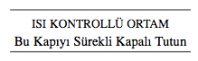

58. BÖLÜM
Key4 takma adlı patlayıcı Özel Harekât Birliği tarafından, kilitli kapıları etrafa asgari zarar vererek açmak için geliştirilmişti. Siklo trimetilen trinitramin ile birlikte dietil heksil bir plastikleştirici içeren bu patlayıcı, aslında kapı dikmelerine yerleştirilmek için kâğıt kadar ince yapraklara sarılmış C-4 parçalarıydı. Kütüphanenin okuma odasına girerken, patlayıcı son derece iyi iş gördü.
Operasyon lideri Ajan Turner Simkins kapı enkazının üzerinden adımını atıp, hareket belirtisi olup olmadığını araştıran gözlerle etrafı taradı. Hiçbir şey yoktu.
Simkins, “Işıkları söndürün,” dedi.
Duvar panelini bulan ikinci bir ajan düğmeyi çevirdi ve içeriyi karanlığa boğdu. Dört adam birden gece görüşü başlıklarını geçirip, gözlüklerini ayarladılar. Gözlüklerinin içinde parlak yeşil tonlarda beliren odayı incelerken kıpırdamadan durdular.
Manzara değişmemişti.
Karanlıkta kimse kıpırdamıyordu.
Kaçaklar muhtemelen silahsızdı ama yine de operasyon ekibi içeriye silahlarını kaldırarak girdiler. Silahları, dört ürkütücü lazer ışınıyla karanlığı deliyordu. Adamlar ışıklarını zemine, duvarlara ve balkonlara tutarak tüm yönleri aradılar. Genellikle karanlık bir odada, lazer görüşlü silahın hafif belirtisi bile hemen teslim olmaya yeterdi.
Bu gece öyle olmayacağı anlaşılıyor.
Hâlâ hareket yoktu.
Elini kaldıran Ajan Simkins, ekibine içeriye yayılmalarını işaret etti. Adamlar sessizce birbirlerinden ayrıldılar. Ortadaki koridorda dikkatle hareket eden Simkins, CIA cephaneliğine yeni eklenen sistemi devreye sokarak, gözlüğünün bir düğmesine bastı. Isı görüntüleme yıllardır vardı ama minyatürleştirme, diferansiyel hassasiyet ve çift kaynaklı entegrasyon alanlarındaki ilerlemeler, ajanların görüşlerini insanüstü sınırlara çıkaran yeni nesil bir görüntüleme cihazı geliştirmişti.
Karanlıkta görüyoruz. Duvarların arkasını görüyoruz. Ve şimdi de... geçmiş zamanı görüyoruz.
Isı görüntüleme cihazı, ısı değişkenlerine o kadar hassaslaştırılmıştı ki, bir kimsenin yerini belirlemekle kalmıyor... daha önce bulunduğu yeri de tespit edebiliyordu. Geçmişi görebilme yeteneği en kıymetli nitelikti. Ve bu gece, bir kez daha değerini ispat ediyordu. Ajan Simkins okuma masalarından birinde termal bir işarete rastlamıştı. Gözlüklerinde kırmızımsı mor renkte parlayan iki ahşap sandalye, bu ikisinin salondaki diğerlerinden daha sıcak olduğunu gösteriyordu. Masa lambasının ampulü turuncu parlıyordu. İki adamın bu masada oturdukları belliydi ama şimdi asıl soru, hangi yöne gittikleriydi.
Cevabını, odanın ortasındaki büyük tahta konsolu çevreleyen merkez masada buldu. Hayalet gibi bir el izi kıpkırmızı parlıyordu.
Simkins silahını kaldırarak sekizgen kabine doğru ilerlerken, lazer görüşünü yüzeyi inceleyecek şekilde ayarladı. Konsolun yan kısmında bir açıklık görünceye kadar etrafında dolaştı. Kendilerini gerçekten de bir dolabın içinde köşeye mi sıkıştırdılar? Açıklığın dış kenarını tarayan ajan, burada başka bir el izi daha gördü. Birisinin dolaptan içeri girerken, kapı dikmesini tuttuğu belli oluyordu.
Sessizlik sona ermişti.
Açıklığı işaret eden Simkins, “Termal işaret!” diye bağırdı. “Etrafını çevirin!”
Ekibi iki zıt kanattan yaklaşarak, sekizgen konsolu kuşattı.
Simkins açıklığa doğru ilerledi. Aralarında üç metre kalmışken, içeriden ışık geldiğini gördü. “Konsolun içinde ışık var!” diye bağırınca, sesi duyan Bay Bellamy ile Bay Langdon’ın ellerini kaldırarak dolaptan dışarı çıkacaklarını umdu.
Hiçbir şey olmadı.
Pekâlâ, başka yoldan yaparız.
Simkins konsola biraz daha yaklaşırken, içinden beklenmedik bir gürültü geldiğini duydu. Makine sesi gibiydi. O kadar küçük bir yerde, bu sesi neyin çıkarabileceğini tahmin etmeye çalışırken durdu. İyice yaklaşınca, makine sesinden başka sesler de duydu. Ve tam açıklığın önüne geldiği anda ışıklar karardı.
Gece görüşünü ayarlarken, teşekkürler, diye düşündü. Avantaj bizde.
Eşikte durup, açıklıktan içeriye göz attı. Kapının ardındaki, hiç beklenmedik bir manzaraydı. Bu konsol bir dolaptan çok, aşağıdaki odaya inen dik merdivenlerin üstündeki yüksek bir tavana benziyordu. Ajan silahını merdivenlerin aşağısına doğrultup, basamaklardan inmeye başladı. Attığı her adımla birlikte makinenin gürültüsü de artıyordu.
Burası da ne böyle?
Okuma odasının altındaki yer, sanayi tipi küçük bir mekânı andırıyordu. Duyduğu gürültü gerçekten de bir makineden geliyordu ama Bellamy ile Langdon mı çalıştırmıştı, yoksa zaten gün boyunca çalışıyor muydu, bundan emin olamadı. Ama her iki şekilde de bir şey fark etmiyordu. Kaçaklar ısı işaretlerini odanın tek çıkışında bırakmışlardı. Ağır kapının tuş takımındaki sayıların üstünde dört parmak izi belirgin biçimde parlıyordu. Kapının etrafında ince çizgi halinde parlayan turuncu ışık, diğer tarafta ışıkların açık olduğunu gösteriyordu.
Simkins, “Kapıyı uçurun!” dedi. “Buradan kaçtılar.”
Bir yaprak Key4 yerleştirip patlatmak sekiz saniyelerini aldı. Duman hafişediğinde ajanlar kendilerini “sergen” diye bilinen garip bir yeraltı dünyasına bakarken buldular.
Kongre Kütüphanesi’nin, çoğu yeraltında bulunan kilometrelerce kitap rafı vardı. Sonsuzluğa uzanan kitap raşarı, aynalarla yaratılan bir tür optik “sonsuzluk” yanılsaması gibiydi.
Bir tabelada şöyle yazıyordu:

Parçalanmış kapıyı iterek geçen Simkins, ardındaki soğuk havayı hissetti. Gülümsemekten kendini alamadı. Daha kolay olamazdı. Kontrollü ortamlardaki ısı işaretleri güneş patlamaları gibi kendilerini belli ederlerdi. Daha şimdiden, Bellamy veya Langdon’ın geçerken tutundukları parmaklığın üzerinde kırmızı bir leke vardı.
Kendi kendine, “Kaçabilirsiniz ama kurtulamazsınız,” diye fısıldadı.
Simkins ile ekibi, raşardan oluşan labirentin içinde ilerlemeye başladı. Oyun sahasında kendi lehine o kadar çok ipucu vardı ki, Simkins’in avını takip etmek için gözlüklerine bile ihtiyacı yoktu. Normal şartlarda raşarla dolu bu labirent, saklanmak için uygun bir ortam sağlardı, ama Kongre Kütüphanesi enerji tasarrufu sağlamak için harekete duyarlı ışıklandırma kullanıyordu ve şimdi kaçakların geçtiği yol uçak pisti gibi aydınlanmıştı. Uzaklardaki ince bir ışık çizgisi, ileride dolambaçlı yollara sapıp kıvrılıyordu.
Adamlar gözlüklerini çıkardılar. Operasyon ekibi, sonsuz kitap labirentinde ışıkları takip ederken, idmanlı bacaklarının üstünde zikzaklar çizdi. Simkins az sonra ilerideki karanlığın içinde yanıp sönen ışıklar gördü. Kazanıyoruz. Öndekilerin ayak seslerini ve kesik kesik solumalarını duyuncaya kadar, o da yoluna hızla devam etti. Sonra hedefi gördü.
“Onları gördüm!” diye bağırdı.
Warren Bellamy’nin ince uzun vücudu, anlaşılan yolun sonuna gelmişti. Yaşlı adam, soluğu kesilince raşarın arasında sendeledi. Boşuna uğraşma ihtiyar.
Simkins, “Olduğunuz yerde durun Bay Bellamy!” diye bağırdı.
Bellamy köşelerden ani dönüşler yapıp, kitap sıralarının arasında zikzaklar çizerek koşmaya devam etti. Her dönüşünde, başının üstündeki ışıklar yanıyordu.
Ekip ona yirmi metre kadar yaklaştığında, durması için yeniden seslendiler ama Bellamy devam etti.
Simkins, “Vurun!” diye emir verdi.
Ekibin öldürücü olmayan silahını taşıyan ajan, tüfeği doğrultup ateş etti. Koridorda hızla fırlayıp, Bellamy’nin bacaklarının etrafına dolanan Makarna Spreyi49 takma isimli silah, aslında parti oyuncağı değildi. Öldürücü olmayan bu “etkisizleştirici”, Sandia Ulusal Laboratuvarı’nda icat edilen bir askeri teknoloji ürünüydü. Temas halinde taş gibi sertleşen tutkallı poliüretan ipler, kaçağın dizlerinin etrafında plastikten sert bir ağ oluşturuyordu. Koşan bir hedef üzerindeki etkisi, hareket halindeki bisikletin tekerleğine çomak sokmakla aynıydı. Bellamy tam adımını atarken poliüretan ipler bacaklarına sarıldı ve tökezleyerek yere düştü. Bellamy karanlık koridorda üç metre daha sürünerek ilerledikten sonra, ışıklar başının üstünde titreşerek yanınca durdu.
Simkins, “Bellamy’yle ben ilgilenirim!” diye bağırdı. “Siz Langdon’ın peşinden gidin! İleride bir yerde olmalı...” Bellamy’nin önündeki kütüphane raşarının simsiyah durduğunu fark eden takım lideri birden durdu. Bellamy’nin önünde başka birinin koşmadığı belliydi. Yalnız mı?
Hâlâ yüzüstü yatan Bellamy, sık nefesler alıyordu. Bacakları ve bilekleri sertleşmiş plastikle kaplıydı.
Ajan, “O nerede?” diye sordu.
Bellamy’nin dudağı düşmenin etkisiyle kanıyordu. “Kim nerede?”
Ajan Simkins ayağını kaldırıp, botuyla Bellamy’nin ipek kravatına bastı. Sonra biraz basınç uygulayarak asıldı. “İnanın bana Bay Bellamy, benimle bu oyunu oynamak istemezsiniz.”
49 Silly String